측량및지형공간정보산업기사 (2009-03-01 기출문제)
1과목: 응용측량
1. 하천의 수면 유속측정을 위하여 그림과 같이 표면부표를 수면에 띄우고 A점을 출발하여 B점을 통과하는데 소요된 시간을 측정하였더니 1분 30초였다. 수면유속의 크기는? (단, AB 두 점간의 거리(L)는 15.3m이다.)
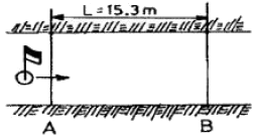
- 0.17m/sec
- 0.15m/sec
- 10.2m/sec
- 11.8m/sec
(정답률: 알수없음)

2. 체적을 계산하는 방법 중 단면법(양단면평균법, 중앙단면법, 각주공식)에 대한 설명으로 틀린 것은?
- 양단면평균법은 실제 값보다 적게 나타나고 중앙단면법은 실제 값보다 크기 나타나는 특성이 있다.
- 각주공식은 중앙단면과 양단면에 심프슨법칙을 적용한것과 같다.
- 3가지 방법 중 각주공식이 가장 정확도가 높다.
- 단면법에 의한 체적계산은 철도, 도로 및 수로 등의 축조에 있어서 절토량, 성토량의 계산에 이용된다.
(정답률: 알수없음)
3. 평균 유속 측정법 중 3점법의 계산에 사용되는 유속은? (단, 수심은 H임)
- 수면에서 0.1H, 0.4H, 0.8H 지점의 유속
- 수면에서 0.2H, 0.4H, 0.8H 지점의 유속
- 수면에서 0.2H, 0.6H, 0.8H 지점의 유속
- 수면에서 0.3H, 0.6H, 0.9H 지점의 유속
(정답률: 알수없음)
4. 30m에 대하여 3cm 늘어나 있는 강철자로 정사각형의 토지를 측정하여 면적 28900m2을 얻었다면 이 토지의 실제 면적은 얼마인가?
- 28842.2m2
- 28871.1m2
- 28928.9m2
- 28957.8m2
(정답률: 알수없음)
5. 도로경관에서의 시점에 대한 특징이 아닌 것은?
- 도로에서의 시점은 이동한다.
- 풍경이 변화하고 속도가 커짐에 따라 시야가 넓어진다.
- 시축이 한 방향으로 한정된다.
- 시점을 내부에 두는 내부경관과 도로 밖에 두는 외부 경관으로 나누어진다.
(정답률: 알수없음)
6. 지하시설물 측량 및 그 대상에 대한 설명으로 틀린 것은?
- 지하시설물측량은 도면작성 및 검수에 초기 비용이 적게 든다.
- 도시의 지하시설물은 주로 상수도, 하수도, 전기선, 전화선, 가스선 등으로 이루어진다.
- 지하시설물과 연결되어 지상으로 노출된 각종 맨홀 등의 가공선에 대한 자료 조사 및 관측 작업도 포함된다.
- 지중레이다관측법, 음파관측법 등 다양한 방법이 사용된다.
(정답률: 알수없음)
7. 깊이 100m, 직경 5m인 1개의 수직터널에 의해서 터널 내외를 연결하는 데 사용하기에 가장 적합한 방법은?
- 사변형법
- 트랜싯과 추선에 의한 방법
- 삼각법
- 지거법
(정답률: 알수없음)
8. 클로소이드를 조합하는 형식이 아닌 것은?
- 기본형
- S형
- 복합형
- M형
(정답률: 알수없음)
9. 급경삽면의 연직각을 측정하였더니 부각 50° 10‘ 40“를 얻었다. 측점까지의 수평거리 120m, 주망원경과의 수직거리가 45cm일 때 연직각은 약 얼마인가?
- 45° 59‘ 47“
- 48° 55‘ 47“
- 49° 57‘ 47“
- 50° 50‘ 47“
(정답률: 알수없음)
10. 터널 내의 A점 좌표(1113m, -342m), B점 좌표(2391m, 1884m)이고, 높이가 각각 68.2m, 95.4m인 AB점을 연결할 때 이 터널의 사거리는?
- 2566.92m
- 2456.88m
- 2327.78m
- 2248.88m
(정답률: 알수없음)
11. 교각 I=30°, 현길이 ℓ=20m, 외할(외선길이) E=5.00m일 때 곡선반지름 R은?
- 111.74m
- 121.74m
- 131.74m
- 141.74m
(정답률: 알수없음)
12. 클로소이드 곡선에 대한 설명 중 맞는 것은?
- 곡선반지름 R, 곡선길이 L, 매개변수 A와의 관계는 RㆍL=A의 관계가 성립한다.
- 곡선반지름에 비례해서 곡선길이가 길어지는 곡선이다.
- 곡선길이가 일정할 때 곡선반지름이 커지면 접선각이 작아진다.
- 곡선반지름이 일정할 때 곡선길이가 커지면 접선각이 작아진다.
(정답률: 알수없음)
13. 그림에서 ∠ACB의 2등분 선상에 D점을 곡선 중심으로 할 때 이 곡선의 접선길이는 얼마인가? (단. CD=20m, I=80°)
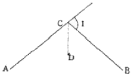
- 54.95m
- 65.49m
- 74.95m
- 85.49m
(정답률: 알수없음)
14. 다름 그림과 같은 흙의 토량은? (단, 계산은 각주공식을 사용함)
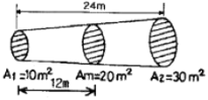
- 500m3
- 480m3
- 360m3
- 280m3
(정답률: 알수없음)
15. 다음 중 유량 및 유속측정을 위한 관측장소로서 고려하여야 할 사항으로 적합하지 않은 것은?
- 직류부로서 흐름이 일정하고 하상의 요철이 적으며 하상 경사가 일정한 곳
- 수위의 변화에 의해 하천 횡당면 형상이 급변하고 와류(渦流)가 일어나는 곳
- 관측장소 상ㆍ하류의 유로가 일정한 단면을 갖는 곳
- 관측이 편리한 곳
(정답률: 알수없음)
16. 다음 그림과 같은 삼각형 모양의 토지를 면적비가 1:3이 될 수 있도록 D점을 결정하고자 한다. BD의 거리를 얼마로 하면 되겠는가?
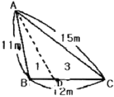
- 2m
- 3m
- 4m
- 5m
(정답률: 알수없음)
17. 다음 중 완화곡선이 아닌 것은?
- clonthoid
- 반향곡선
- lemniscate
- 3차포물선
(정답률: 알수없음)
18. 단곡선 설치에서 접선장(T.L)이 100m이고 원곡선의 반지름(R)이 100m라면 교각(I)은 얼마인가?
- 45°
- 60°
- 90°
- 120°
(정답률: 알수없음)
19. 하천측량에서 골조측량은 보통 어떤 형으로 구성하는가?
- 격자망
- 유심다각형망
- 결합다각망
- 단열삼각망
(정답률: 알수없음)
20. 다음 그림과 같은 단면의 용지폭은 얼마인가?
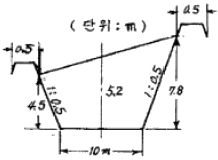
- 16.15m
- 17.15m
- 34.60m
- 35.60m
(정답률: 알수없음)
2과목: 사진측량 및 원격탐사
21. 항공사진의 촬영 및 판독 순서로 맞는 것은?
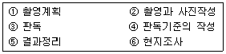
- ①→⑥→②→③→④→⑤
- ①→⑥→②→④→③→⑤
- ①→②→③→④→⑥→⑤
- ①→②→④→③→⑥→⑤
(정답률: 알수없음)
22. 항공하이다의 활용분야로 틀린 것은?
- 지하매설물의 탐지
- 빙하 및 사막의 DEM 생성
- 수목의 높이 측정
- 송전선의 3차원 위치 측정
(정답률: 알수없음)
23. 상호표정에서 과잉수정을 위한 속도율은? (단, 표정점의 투영거리 : 종간격 길이 = h:d=4.2)
- 0.6
- 0.8
- 1.0
- 1.2
(정답률: 알수없음)
24. 영상처리 내용 중 방사보정(radiometric corrections)에 해당되지 않는 것은?
- 대기의 산란광 영향 보정
- 기복변위에 의한 왜곡 보정
- 영상자료의 줄무늬 현상 보정
- 태양고도각의 차이에 의한 영향 보정
(정답률: 알수없음)
25. 항공사진 재촬영이 필요한 경우가 아닌 것은?
- 인접한 사진의 축척이 현저한 차이가 있을 때
- 인접코스간의 중복도가 표고의 최고점에서 3% 정도일 때
- 구름이 사진에 나타날 때
- 촬영코스의 수평이탈이 계획 촬영고도의 3% 정도일 때
(정답률: 알수없음)
26. GIS 분석 방법 중 차량 경로 탐색이나 최단 거리 탐색, 최적 경로 분석, 자원 할당 분석 등에 주로 사용되는 것은?
- 면사상 중첩 분석
- 버퍼 분석
- 선사상 중첩 분석
- 네트워크 분석
(정답률: 알수없음)
27. 항공사진 촬영계획에 대한 설명 중 맞는 것은?
- 일반적으로 종중복도 30%, 횡중복도 60%로 계획한다.
- 비고가 촬영고도의 20%를 초과할 경우에는 2단 촬영을 한다.
- 일반적으로 넓은 지역 촬영시는 남북방향으로 촬영경로를 계획한다.
- 절대표정을 위한 최소 표정점 수는 수평위치 기준점 3점, 수직 위치 기준점 2점이다.
(정답률: 알수없음)
28. 축척 1:10000으로 표고 200m의 평탄한 토지를 촬영한 항공사진의 촬영 기선길이는 몇 m인가? (단, 사진크기 23cm×23cm, 중복도 65% 임)
- 1400m
- 1150m
- 920m
- 8⑤m
(정답률: 알수없음)
29. 지표간 거리 226.2mm, 초점거리 150.0mm인 사진기로 찍은 양화필름을 도화하기 위하여 이 밀착양화 필름의 지표간 거리를 관측하였더니 226.3mm이었다. 사용할 도호기의 초점거리를 얼마로 하는 것이 좋은가?
- 149.8mm
- 150.2mm
- 150.6mm
- 151.0mm
(정답률: 알수없음)
30. 가장 넓은 면적이 촬영된 사진은?
- 사진기의 초점거리가 100mm, 촬영고도가 500m인 수직사진
- 사진기의 초점거리가 100mm, 촬영고도가 1000m인 수직사진
- 사진기의 초점거리가 150mm, 촬영고도가 500m인 수직사진
- 사진기의 초점거리가 150mm, 촬영고도가 1000m인 수직사진
(정답률: 40%)
31. 다음 중 GIS에서 공간데이터베이스의 유지ㆍ보안을 위하여 취할 수 이는 항목과 거리가 먼 것은?
- 전체 데이터베이스의 주기적 백업(backup)
- 암호 등 제반 안전장치를 통한 인가받은 사람만이 사용할 수 있도록 제한
- 지속적인 데이터 검색
- 전력 손실에 대비한 UPS(Uninterruptable Power Supplies) 등의 설치
(정답률: 알수없음)
32. 수동 디지타이징에 의한 종이지도의 입력시 그 특징으로 옳은 것은?
- 점과 점 간의 거리를 짧게 할수록 오차가 작다.
- 스캐닝에 비해 작업이 빠르고 쉽다.
- 반드시 래스터화 작업이 수반되어야 한다.
- 격자데이터를 벡터데이터로 전환하기 위한 벡터화 작업이 수반된다.
(정답률: 알수없음)
33. 사진측량의 표정해석과정 중 정밀좌표관측기에 의해 관측된 상좌표로부터 사진좌표로 변환하는 과정을 무엇이라 하는가?
- 내부표정
- 상호표정
- 접합표정
- 절대표정
(정답률: 알수없음)
34. 사진의 축척을 일치시키고, 사진기의 경사에 의한 변위를 수정하여 모자이크한 등고선이 삽입되지 않은 사진지도는?
- 약집성 사진지도
- 조정집성 사진지도
- 수치집성 사진지도
- 정사투영 사진지도
(정답률: 알수없음)
35. 다음 중 GIS 지리정보의 특성이 아닌 것은?
- 속성정보를 포함한다.
- 자연적인 현상만 다룬다.
- 공간적 상호관계를 다룬다.
- 지리적 위치정보가 중요하다.
(정답률: 알수없음)
36. 위성영상이나 항공사진의 가시적 판독성을 향상시킬 목적으로 여러 가지 화질향상기법이 이용된다. 다음 중 영상의 대조비향상기법이라 볼 수 없는 것은?
- 선형대조비확장기법(Linear Contrst Stretching)
- 부분대조비확장기법(Piecewise Contrst Stretching)
- 정규분포확장기법(Gaussian Stretching)
- 중앙값필터링기법(Median Filtering)
(정답률: 알수없음)
37. 동일 사진축척으로 촬영하여 도화하는 조건에서, 기본변위의 영향을 최소화하기 위한 촬영방법은?
- 광각 카메라 대신 초광각 카메라를 사용하고 중복도를 10~20% 감소시킨다.
- 광각 카메라 대신 초광각 카메라를 사용하고 중복도를 10~20% 증가시킨다.
- 광각 카메라 대신 보통각 카메라를 사용하고 중복도를 10~20% 감소시킨다.
- 광각 카메라 대신 보통각 카메라를 사용하고 중복도를 10~20% 증가시킨다.
(정답률: 알수없음)
38. 수록된 데이터의 내용, 품질, 조건 및 특징 등을 저장한 데이터로서 데이터에 관한 데이터를 무엇이라 하는가?
- 헤더데이터
- 메타데이터
- 참조데이터
- 속성데이터
(정답률: 알수없음)
39. 다음 중 GIS에서 사용하는 수치지도를 제작하는 방법이 아닌 것은?
- 항공기를 이용하여 항공사진을 촬영하여 수치지도를 만드는 방법
- 항공사진 필을 고감도 복사기로 인쇄하는 방법
- 인공위성데이터를 이용하여 수치지도를 만드는 방법
- 종이지도를 디지타이징하여 수치지도를 만드는 방법
(정답률: 알수없음)
40. 촬영고도 3000m인 밀착사진이 있다. 이 사진에서 비고 400m에 대한 시차차의 크기는 얼마인가? (단, 초점거리 15cm, 사진크기 23cm×23cm, 사진의 종중복도 60%이다.)
- 12mm
- 15mm
- 18mm
- 20mm
(정답률: 알수없음)
3과목: GIS 및 GPS
41. 평탄한 지역에서 15km 떨어진 지점을 관측할 때 발생되는 곡률오차의 크기는? (단, 지구의 반지름=6370km)
- 17.66m
- 68.28m
- 71.34m
- 100.54m
(정답률: 알수없음)
42. “GPS측량에서 L-밴드의 마이크로파에 속하는 두 개의 반송파는 두 개의 PRN(Pseudo-Random Noise)코드로 변조된다.”에서 두 개의 코드로 짝지어진 것은?
- C/A코드, L2코드
- C/A코드, P코드
- P코드, L코드
- L코드, G코드
(정답률: 알수없음)
43. 다음 그림과 같이 토지의 한변 BC에 평행하게 면적을 m:n=1:3으로 분할할 때 AX의 길이는? (단, AB=40m임)
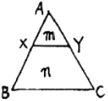
- 10m
- 15m
- 20m
- 25m
(정답률: 알수없음)
44. 삼변측량에 관한 설명 중 옳지 않은 것은?
- 삼변측량의 정확도는 삼변망이 정오각형 또는 정육각형의 도형을 이루었을 때 가장 이상적이다ㅑ.
- 삼변측량 시 cosine 제2법칙, 반각공식을 이용하면 변으로부터 각을 구할 수 있다.
- 삼변측량 시 관측점에서 가능한 모든 점에 대한 변관측으로 조건식 수를 증가시키면 정확도를 향상시킬 수 있다.
- 삼변측량에서 관측대상이 변의 길이이므로 삼각형의 내각의 크기가 10° 이하인 경우에도 매우 유용하다.
(정답률: 알수없음)
45. 레벨(Level)의 조정에 관한 사항으로 틀린 것은?
- 기포관축은 연직축에 직교해야 한다.
- 시준선은 기포관측에 평행해야 한다.
- 십자횡선은 연직축에 직교해야 한다.
- 십자종선과 시준선은 평행해야 한다.
(정답률: 알수없음)
46. 미지점의 표척을 시준한 값을 무엇이라 하는가?
- 후시
- 전시
- 중간점
- 이기점
(정답률: 알수없음)
47. GPS 측량의 특징에 대한 설명 중 틀린 것은?
- GPS에 사용되는 좌표체계의 원점은 동경원점이다.
- 날씨, 관측점간의 시통에 관계없이 측량할 수 있다.
- 고정밀도 측량이 가능하다.
- 위성을 추적할 수 있는 공간이 확보되어야 한다.
(정답률: 알수없음)
48. 거리 1회 측정시 발생하는 오차를 ±0.01m라 하면 50회 연속 측점했을때의 오차 계산식은?
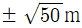
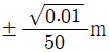
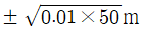
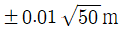
(정답률: 알수없음)
49. 직접 수준측량을 하여 2km를 왕복하는데 오차가 ±16mm였다면 이것과 같은 정밀도로 측량하여 4.5km를 왕복 측량하였을 때에 예상되는 오차는?
- ±24mm
- ±42mm
- ±60mm
- ±74mm
(정답률: 알수없음)
50. 기포관의 감도는 다음 중 무엇으로 표시하는가?
- 기포 1눈금의 이동에 따른 경사각의 크기로 표시되는 각
- 기포관의 길이가 격사각의 크기로 표시되는 각
- 기포관의 두 눈금 이동이 격사각의 크기로 표시되는 각
- 기포관의 눈금 양단이 경사각의 크기로 표시되는 각
(정답률: 알수없음)
51. 두 점간의 거리를 수십번 측량하여 최확값을 계산하고 각 관측값의 오차를 계산하여 그 값을 돗수분포그래프로 그려보았다. 가장 정밀하면서 동시에 정확하게 측량한 팀은 어느 팀인가?
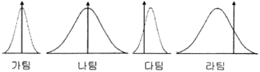
- 가팀
- 나팀
- 다팀
- 라팀
(정답률: 알수없음)
52. 전파 거리측량기에 의한 거리측량에서 거리의 크기에 비례하여 영향을 주는 요소는?
- 공기 굴절률
- 위상차 관측
- 기계 상수
- 반사경 상수
(정답률: 알수없음)
53. 기설(旣設)의 기준점만으로는 세부측량을 실시하기에 부족 할 경우 기설 기준점을 기준으로 하여 새로운 수평위치 및 수직위치를 관측하여 결정되는 기준점을 무엇이라 하는가?
- 삼각점
- 수준점
- 3차원 기준점
- 도근점
(정답률: 알수없음)
54. 2배각법으로 관측한 결과가 그림과 같을 때 수평각 ∠AOB를 구하는 식으로 옳은 것은?
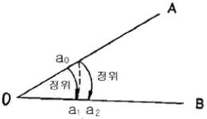
- a1-a0
- (a2-ao)/2
- a2-a1
- (a2+2a1+ao)/4
(정답률: 알수없음)
55. C/A 코드에 인위적으로 궤도오차 및 시계오차를 부가하여 민간사용의 정확도를 저하시켰던 정책을 무엇이라 하는가?
- DoD
- SA
- DSCS
- MCS
(정답률: 알수없음)
56. A, B 삼각점의 평면직각좌표가 A(-350.139, 201.326), B(310.486, -110.875)일 때 측선BA의 방위각은? (단, 단위는 m)
- 25° 17‘ 41“
- 154° 42‘ 19“
- 208° 17‘ 41“
- 334° 42‘ 19“
(정답률: 알수없음)
57. 다음 중 GNSS(Global Navigational Satellite System) 위성측량과 같은 위성 시스템과 가장 거리가 먼 것은?
- GPS
- GLONASS
- IKONOS
- GALILEO
(정답률: 알수없음)
58. RTK-GPS에 의한 세부측량에 대한 설명으로 옳은 것은?
- RTK-GPS 관측에 의해 지형도 등의 작성에 필요한 수치데이터를 취득하는 작업을 말한다.
- RTK-GPS 관측에 의해 구조물의 변형과 변위를 관측하는 작업을 말한다.
- RTK-GPS 관측에 의해 국가기준점인 삼각점을 설치하는 작업을 말한다.
- RTK-GPS 관측에 의해 국도 변에 설치된 수준점의 타원체고를 구하는 작업을 말한다.
(정답률: 알수없음)
59. 다음 중 지성선의 종류에 속하지 않는 것은?
- 계곡선
- 능선
- 경사변환선
- 산능대지선
(정답률: 알수없음)
60. 그림과 같이 장애물로 인하여 AC 및 BC를 측정하고 그 사이에 AC, BC 길이의 1/3씩을 A와 B에서 취하여 P, Q로 하였다면 AB의 거리는? (단, PQ의 거리는 25.75m이다.)
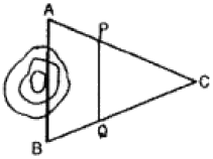
- 38.625m
- 37.625m
- 35.510m
- 29.785m
(정답률: 알수없음)
4과목: 측량학
61. 측량기술자는 그가 작성한 측량도서에 서명ㆍ날인하여야 하는데 이때 기재 사항과 관련이 없는 것은?
- 소속업체명
- 국가기술자격번호
- 학력ㆍ경력자관리번호
- 최종학력의 학교 및 전공
(정답률: 알수없음)
62. 측량업무 종사자 등의 교육훈련 대상이 아닌 자는?
- 측량업에 등록한 업체에 소속된 측량기술자
- 측량기기 성능검사 대행업체에 소속된 측량기술자
- 측량계획기관에 소속된 도시계획업무에 종사하는 기술자
- 지자체 공무원 중 측량분야에 종사하는 공무원
(정답률: 알수없음)
63. 측량업의 등록을 취소하여야 하는 사항이 아닌 것은?
- 다른 사람에게 자기의 등록수첩을 대여한 때
- 정당한 사유없이 등록을 한 날로부터 6개월 이내에 영업을 개시하지 아니한 때
- 다른 사람에게 자기의 등록증을 대여한 때
- 허위 기타 부정한 방법으로 측량업의 등록을 한 때
(정답률: 알수없음)
64. 측량성과의 국외반출시 허가를 받은 후 반출해야 하는 경우는?
- 대한민국정부와 외국정부간에 체결된 협정 또는 합의에 의하여 상호 교환하는 경우
- 정부를 대표하여 외국정부와 교섭하거나 국제회의 또는 국제기구에 참석하는 자가 자료로 활용하기 위하여 반출하는 경우
- 관광객의 유치와 관광시설의 선전을 목적으로 제작하여 반출하는 경우
- 축척 5천분의 1의 축척도를 국외로 반출하는 경우
(정답률: 알수없음)
65. 우리나라의 측량기준이 되는 세계측지계 및 측량원점에 대한 설명으로 옳은 것은?
- 회전타원체의 중심은 지구의 기하중심과 일치하여야 한다.
- 대한민국수준원점은 원점표석 수정판의 영눈금선 아래점 기준을 말한다.
- 원방위각은 원점으로부터 진북을 기준하여 좌회로 측정한 것을 말한다.
- 회전타원체의 단축은 지구의 자전축과 일치하여야 한다.
(정답률: 알수없음)
66. 다음 중 국토지리정보원장이 간행하는 지도의 축척이 아닌 것은?
- 1:1000
- 1:3000
- 1:5000
- 1:10000
(정답률: 알수없음)
67. 측량표를 국토지리정보원장의 승인없이 이전하거나 손괴한 자의 벌칙 기준은?
- 2년 이하의 징역 또는 2000만원 이하의 벌금
- 1년 이하의 징역 또는 1000만원 이하의 벌금
- 200만원 이하의 과태료
- 3년 이하의 징역 또는 3000만원 이하의 벌금
(정답률: 알수없음)
68. 측량업에 등록한 측량업자의 지위를 승계를 받을 수 없는 경우는?
- 측량업의 등록을 한 자가 사망한 때 그 업체에 등록되어 있는 임원
- 측량업의 등록을 한 자가 그 사업을 양도한 때 그 양수인
- 측량업의 등록을 한 자가 사망한 때 그 사업의 상속인
- 법인을 한병한 후 존속하는 법인
(정답률: 알수없음)
69. 1등 삼각점 표석의 표주 상면의 한 변 길이는?
- 10cm
- 15cm
- 18cm
- 20cm
(정답률: 알수없음)
70. 공공측량의 측량성과와 측량기록 사본의 교부를 받고자 하는 자는 어디에 신청하여야 하는가?
- 국토해양부장관
- 국토지리정보원장
- 공공측량작업기관
- 공공측량계획기관
(정답률: 알수없음)
71. 측량심의회의 심의 사항과 관계가 먼 것은?
- 측량도서의 발간
- 공공측량의 심사
- 측량기술의 연구ㆍ발전
- 기본측량에 관한 게획의 수립 및 실시
(정답률: 알수없음)
72. 측량법에 의한 과태료처분에 불복이 있는 자는 그 처분이 있음은 안 날로부터 몇 일 이내에 이의를 제기할 수 있는가?
- 7일
- 15일
- 30일
- 60일
(정답률: 알수없음)
73. 측량업자인 법인이 파산 또는 합병 외의 사유로 해산한 때 청산인은 그 사유가 발생한 날로부터 최대 몇 일 이내에 신고하여야 하는가?
- 30일
- 20일
- 10일
- 7일
(정답률: 알수없음)
74. 기본측량을 위하여 설치한 측량표지에 이상이 있음을 발견하였을 때 보고의 의무가 있는 자는?
- 측량심의위원장
- 국토관리청장
- 지방경찰청장
- 시장ㆍ군수 또는 구청장
(정답률: 알수없음)
75. 기본측량의 실시공고를 당해 인터넷홈페이지에 공고하는 경우, 최소 몇 일 이상 게시하여야 하는가?
- 7일
- 10일
- 14일
- 20일
(정답률: 알수없음)
76. 수치지도의 판매가격을 정하는 때의 기준으로 틀린 것은?
- 도엽당 판매가격을 정할 것
- 계층구조별로 판매가격을 정할 것
- 수치지도의 복사에 필요한 재료비 등 가공비용이 포함되도록 할 것
- 지도 등의 판매가격은 행정안전부장관이 정하도록 할 것
(정답률: 알수없음)
77. 지도도식규칙에 의해 지형도에서 지모(地貌)를 표현하는 일반적인 방법으로 옳은 것은?
- 지류계
- 등고선
- 점고법
- 음영기복
(정답률: 알수없음)
78. 수치지도의 보완에 있어서 공공측량계획기관은 당해기관에서 제작한 수치지형도 및 수치주제도에 대하여 얼마 주기를 기준으로 보완하여야 하는가?
- 수치지형도 : 1년마다 1회 이상,
수치주제도 : 1년마다 1회 이상 - 수치지형도 : 1년마다 1회 이상,
수치주제도 : 2년마다 1회 이상 - 수치지형도 : 2년마다 1회 이상,
수치주제도 : 3년마다 1회 이상 - 수치지형도 : 3년마다 1회 이상,
수치주제도 : 3년마다 1회 이상
(정답률: 알수없음)
79. 지도판매 대행업자가 지도를 복제하여 판매하고자 할 때 취해야 할 사항 중 맞는 것은?
- 판매사업자는 국토해양부장관이 지정한다.
- 지도원판은 업자 스스로가 제작하여야 한다.
- 판매가격은 대한측량협회장에게 신고하여야 한다.
- 간행물의 발행에 앞서 국토지리정보원장의 심사를 받아야 한다.
(정답률: 알수없음)
80. 손실보상에 관한 협의가 이루어지지 않을 때에는 국토해양부령이 정하는 바에 따라 재결신청서를 관할토지수용위원회에 제출해야 하는데 그 사항이 아닌 것은?
- 재결의 신청자와 상대방의 성명 및 주소
- 협의의 내용
- 보상받고자하는 손실액과 그 내역
- 측량성과의 보관장소
(정답률: 알수없음)
수면 유속 = AB 거리 / A에서 B까지 걸린 시간
AB 거리는 문제에서 주어졌으므로, A에서 B까지 걸린 시간만 계산하면 된다.
1분 30초는 초로 환산하면 90초이다.
따라서, 수면 유속 = 15.3m / 90초 = 0.17m/sec
정답은 "0.17m/sec"이다.